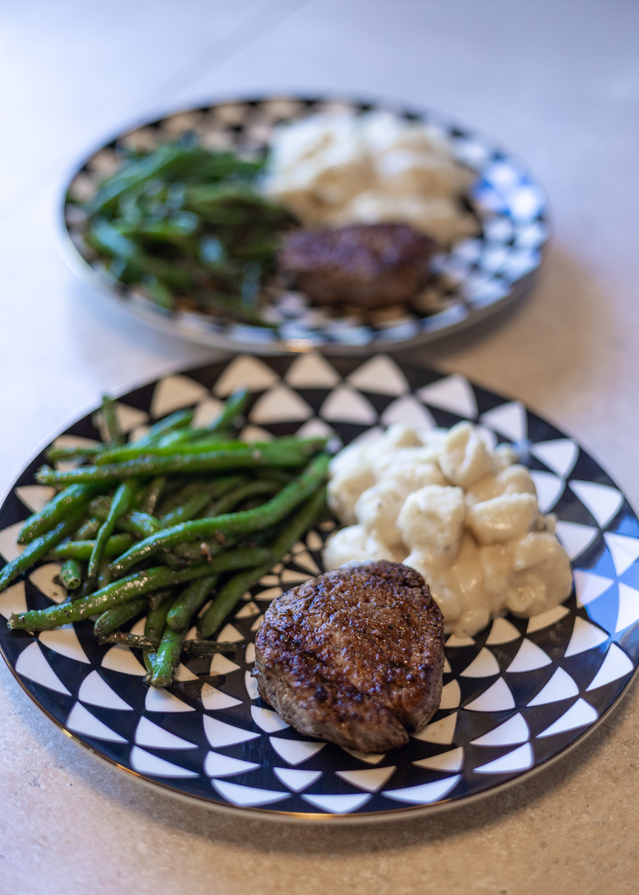
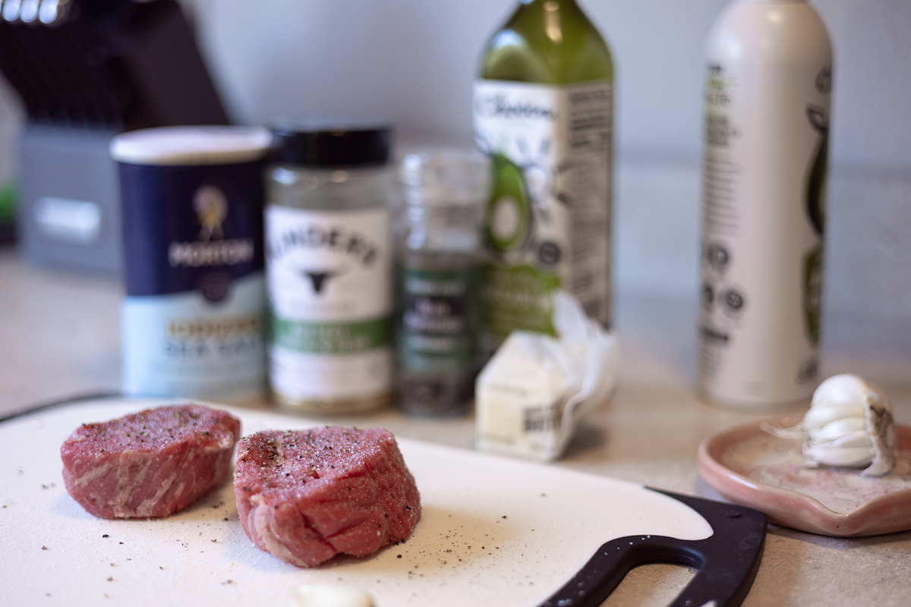
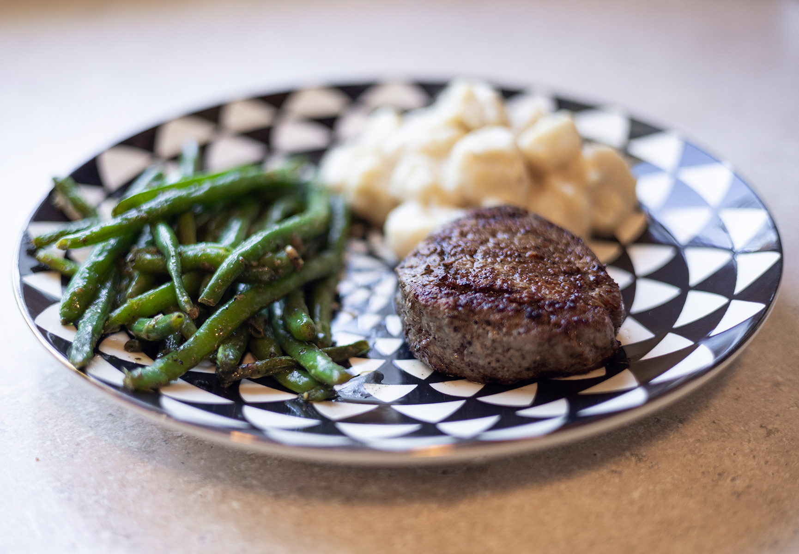

Filet Mignon

While filet is usually a pricier cut of steak, it is the only cut my house really enjoys. When I am lucky enough to find a great deal on two little filets, I always grab them. We enjoy a medium rare steak, and cooking time varies based on size. Despite some variables, the seasoning and preparation requires the same easy effort. I think this pairs well with most of the sides listed on this site, but also enjoy with broccoli or a fresh salad.

Ingredients
- 2 small Filet Mignon Cuts of Steak
- 3 tablespoons butter, softened
- 2 cloves garlic, minced
- Salt and Pepper
- Neutral Oil Spray
Instructions
- Make your compound butter: add all minced garlic to the softened butter and mix well. Take a small section of wax paper or saran wrap and roll the butter into a log and chill until solid.
- Season your steak with a liberal amount of salt. Hold off on your pepper until the steak is mostly done or it will burn.
- Heat a skillet on high, bonus points for cast iron, but this will work with any skillet. Add a little oil to the pan to help sear and reduce chance of sticing. Now add your salted steak. You should hear a sizzle immediately or your pan is not hot enough. Sear your steak for about 2 minutes on the first size, flip and reduce heat to medium/ low while you sear the other side.
- Remove your compound butter from its wrapper and slice in half. Place a pat of butter on top of each steak. It will begin to melt quickly.
- Once the butter is mostly melted add pepper, or about 3 minutes after your original flip, flip your steak again. Add your pepper to the other side. This is where I use the palm of the hand test on the steak to check doneness. I don't mean touching the hot pan! Make a loose fist, gently touching your fingers to the palm of your hand. With your oposite hand, feel the tension of the palm exposed under your thumb. Remebering that firmness, carefully press a finger into the center of the steak. If they match, you are at a medium rare. Firmer steak is a more well done steak, a tighter fit can mimic this feeling. I check often after the first 4 minutes of cooking. Once you've reached your desired firmness, remove from heat.
- Allow steak to rest for 1-2 minutes before serving with your favorite sides.
